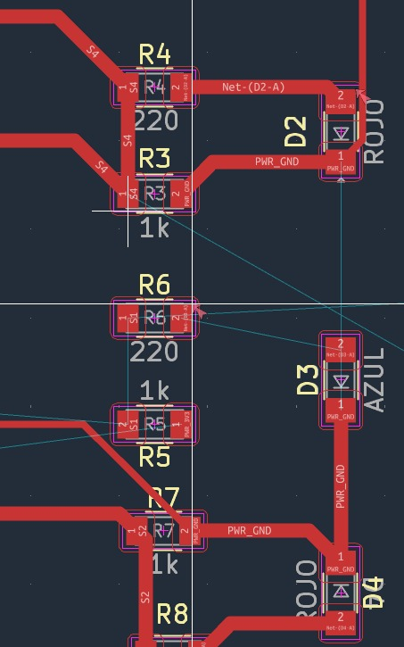
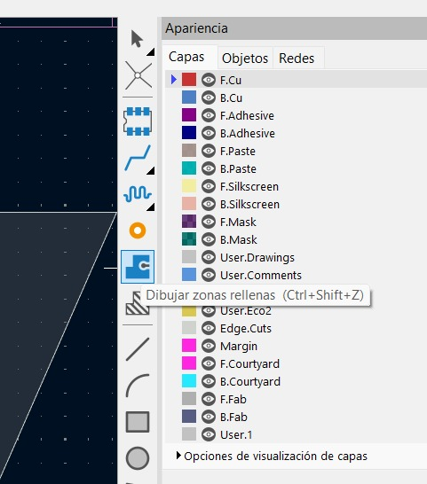

Integrantes del equipo


KiCad
1. Producción electrónica
La producción electrónica es el proceso de diseñar, fabricar, ensamblar y verificar dispositivos y circuitos electrónicos. Su objetivo es transformar un diseño en un producto funcional que cumpla con los requisitos de calidad y funcionamiento.
En una placa de circuito impreso (PCB), este proceso incluye elaborar el diagrama del circuito, seleccionar los componentes, diseñar las pistas y fabricar la placa. Después, se colocan y sueldan los componentes y se realizan pruebas para comprobar que las conexiones y el circuito funcionen correctamente.
A lo largo de esta materia documentaremos la creación de nuestra placa, desde el diseño inicial hasta su ensamblaje y pruebas, mostrando los avances y las dificultades de cada etapa.
2. Programa KiCad
El programa que estamos utilizando para desarrollar nuestra placa de circuito impreso es KiCad. Con este software podemos elaborar el diagrama esquemático, seleccionar las huellas de los componentes y diseñar la distribución de nuestra placa.
Para comenzar, descargamos e instalamos KiCad en nuestro equipo. Este es el primer paso para contar con las herramientas necesarias y empezar a trabajar en el proyecto.

Desde la interfaz de KiCad podemos crear y organizar nuestro proyecto, abrir el editor de esquemáticos y acceder al editor de placas de circuito impreso. Estas herramientas nos permiten pasar de las conexiones eléctricas del circuito a su distribución física en la placa.

Durante el diseño podemos definir las dimensiones de la placa, el ancho de las pistas, la separación entre conexiones y el tamaño de las perforaciones. Ajustaremos estos parámetros conforme a las capacidades de la máquina CNC ________, ya que con este equipo vamos a fabricar nuestra placa.
KiCad también cuenta con herramientas de revisión que ayudan a identificar posibles errores de conexión y verificar las reglas de diseño. Además, permite visualizar la placa en 3D para revisar la distribución de los componentes antes de pasar a la fabricación.
3. Elaboración del esquemático
Iniciamos armando el circuito en el editor de esquemáticos de KiCad. Colocamos algunas resistencias e interruptores (switches), representados mediante sus símbolos eléctricos, y realizamos las conexiones necesarias entre los componentes para armar nuestro circuito.

El esquemático es importante porque sirve como guía para diseñar la placa de circuito impreso. Por esta razón lo elaboramos primero: nos permite identificar los componentes, entender cómo se conectan y revisar las conexiones antes de trabajar en la distribución física de la placa.
Después asignamos a cada componente su huella, que representa el espacio y los puntos de conexión que ocupará en la PCB. La huella debe coincidir con las dimensiones y la posición de las terminales del componente que utilizaremos.

Una vez definidos el esquemático y las huellas, podemos continuar en el editor de PCB. Ahí acomodamos los componentes y trazamos las pistas que los conectan, buscando una distribución ordenada que facilite la fabricación y la soldadura.

Antes de fabricar la placa, revisaremos que las conexiones correspondan al esquemático y que el diseño cumpla con los parámetros establecidos para la CNC. Finalmente, exportaremos los archivos necesarios para preparar el mecanizado en el software correspondiente.
4. Parámetros
Una vez organizados los componentes, comenzamos a ajustar los parámetros de las pistas que conectarán nuestro circuito. Necesitamos definir el ancho de las conexiones y dejar espacio suficiente entre ellas para facilitar la fabricación de la placa.
Para nuestro proyecto establecimos un ancho mínimo de 0.4 mm y un máximo de 0.8 mm. Con este intervalo buscamos mantener un trazado ordenado y reducir dificultades al fabricar las conexiones. El ancho elegido debe considerar el espacio disponible y la corriente que circulará por cada pista.

¿Qué buscamos con estos ajustes?
Definir los anchos antes de continuar nos da una referencia para trabajar de forma consistente y distribuir mejor las conexiones.
También revisamos las separaciones, especialmente donde se juntan varias pistas o terminales. El ancho y la separación son parámetros diferentes y ambos deben comprobarse.
Del diseño a la fabricación
La herramienta de la CNC necesita retirar el cobre entre las conexiones sin dañar las pistas que queremos conservar. Por eso revisaremos que las separaciones sean compatibles con la herramienta y con la precisión del equipo.
Finalmente, comprobaremos que no existan conexiones pendientes y ejecutaremos la revisión de reglas de diseño de KiCad antes de preparar la fabricación.
5. Conectar componentes
Ancho elegido: 0.4 mmEn esta etapa conectaremos los componentes mediante las pistas de cobre de la PCB, siguiendo las conexiones del esquemático. Para este trazado utilizaremos un ancho de 0.4 mm, respetando el mínimo configurado para nuestro proyecto.
Una pista más estrecha que el mínimo configurado puede generar una infracción en la revisión de reglas de diseño. El valor de 0.4 mm corresponde a nuestra configuración; no es una medida obligatoria para todos los proyectos de KiCad.

¿Cómo realizaremos las conexiones?
-
Definir el ancho
Seleccionaremos pistas de 0.4 mm y comprobaremos que los segmentos trazados conserven el ancho elegido.
-
Organizar los recorridos
Buscaremos trayectorias ordenadas. Las pistas de conexiones diferentes no deben cruzarse ni tocarse en una misma capa de cobre, ya que podrían provocar un cortocircuito. Respetaremos también la separación configurada entre ellas.
-
Revisar los puntos de unión
Cada pista debe llegar al pad correcto del componente. No basta con que parezca cercana: debe quedar eléctricamente conectada, sin dejar conexiones pendientes.
6. Delimitación de zonas de cobre
Una vez trazadas las conexiones, continuaremos con la delimitación de las zonas de cobre. Utilizaremos la herramienta “Dibujar zonas rellenas” de KiCad para definir un área de cobre dentro del diseño.
La capa F.Cu
Trabajaremos en F.Cu, que corresponde a la capa de cobre frontal de la PCB. Al crear la zona seleccionaremos la red eléctrica a la que pertenecerá, de acuerdo con nuestro esquemático.
La zona debe mantener la separación configurada respecto a las pistas y terminales de otras redes, evitando uniones eléctricas no deseadas.
- Herramienta
- Dibujar zonas rellenas
- Capa de trabajo
- F.Cu · Cobre frontal

Delimitar, rellenar y revisar
Dibujaremos el contorno de la zona mediante sus vértices y cerraremos el polígono. Después actualizaremos el relleno para comprobar cómo se distribuye el cobre alrededor de las pistas y los componentes.
El límite de esta zona no sustituye el borde físico de la placa. Ese contorno se define por separado en Edge.Cuts y debe formar un perímetro cerrado.
Antes de preparar los archivos de fabricación, actualizaremos las zonas y ejecutaremos la revisión de reglas de diseño. Verificaremos también que las separaciones puedan realizarse con la herramienta de la CNC.
Monofab
Próximos avances
Aquí documentaremos el trabajo con Monofab, incluyendo la preparación del equipo, sus ajustes y las evidencias del proceso.
CNC
Próximos avances
Aquí agregaremos los apartados de CNC: preparación de archivos, herramientas, parámetros de mecanizado y resultados.